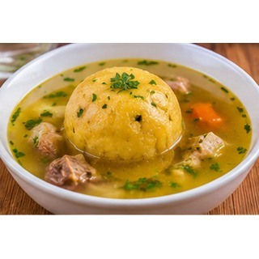

Reseña del cantón
Puebloviejo es uno de los cantones tradicionales de Los Ríos y mantiene una estrecha relación con la producción agrícola. En sus comunidades se cultivan productos como arroz, cacao y banano, que contribuyen a la economía local. La cultura montuvia se manifiesta en las costumbres, la gastronomía y las festividades. Sus parroquias conservan una identidad vinculada al trabajo rural.
Población
40.961 habitantes (Censo de Población y Vivienda 2022).
Parroquias
Puebloviejo (cabecera cantonal), Puerto Pechiche y San Juan.
Economía y cultura
Sus parroquias y recintos mantienen una relación estrecha con la producción agropecuaria. En las comunidades se conservan saberes asociados al campo, a las festividades locales y a la cocina tradicional de Los Ríos.
Alcaldesa
Elsy Ospina Garcés — período 2023–2027.

Fuente: Directorio oficial de alcaldes y alcaldesas de AME.
Platos típicos
Caldo de bola, bollo de pescado y gallo pinto.

Estas preparaciones se documentan como parte de la gastronomía local. Su disponibilidad y preparación pueden variar entre comunidades.
Lugares turísticos
Centro tradicional de Puebloviejo y sectores rurales de Puerto Pechiche y San Juan, donde se observan paisajes agrícolas y vida comunitaria.
Mapa del cantón
Mapa de Google Maps centrado en el cantón: